Plain background
MatchA single card on a plain green surface.

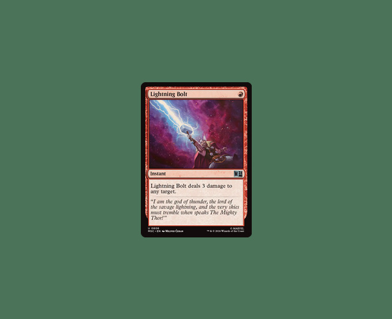
magicextract finds trading card shaped outlines and returns perspective-corrected crops. It does not identify which card it has found. These examples show what works, what gets missed, and what gets mistaken for a card.
These are generated test scenes, not camera photographs. Every output below comes from the default extractor. The crops are shown as returned, including errors and upside-down cards. Click an image to see it full size.
These examples return the expected cards with accurate outlines and crops.
A single card on a plain green surface.

The card is rotated 42 degrees; the crop is straightened.
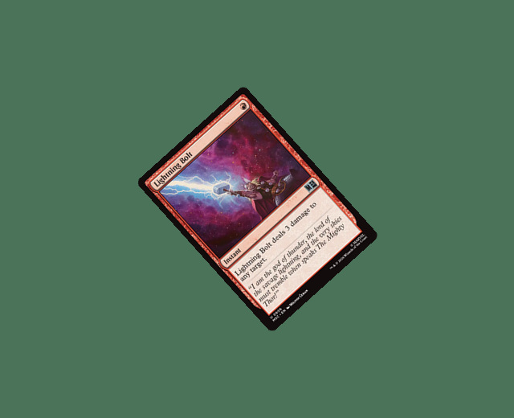
Mild simulated defocus leaves enough of the border to extract the card.
The faint outer border is recovered; the crop keeps the image's original brightness.
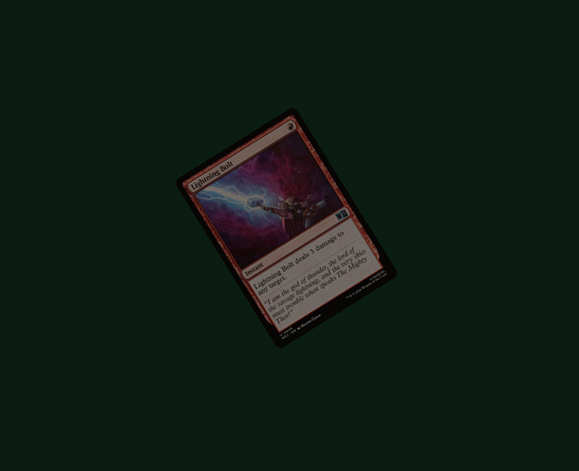
Four separated cards are returned as four separate crops.
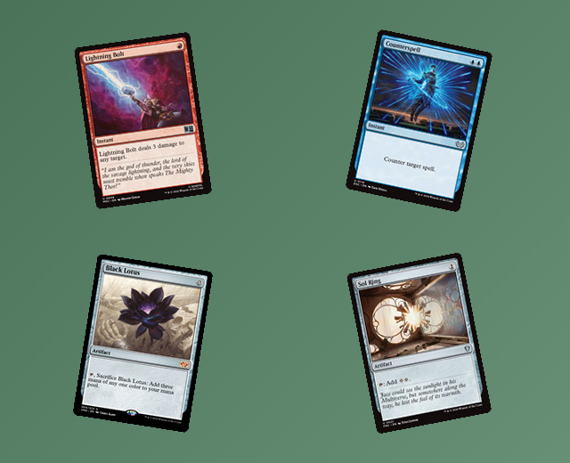
The outline is recovered around a partly hidden corner; the finger remains in the crop.
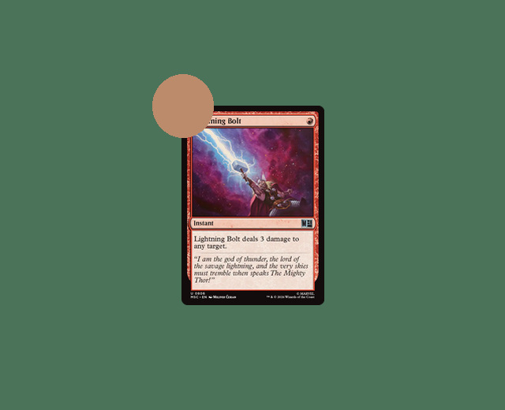
A simulated camera pitched 65 degrees still returns the full card.
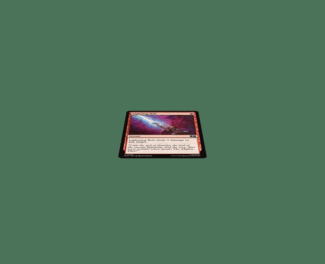
An original patterned card back can be extracted without knowing the card's identity.
The visible dark border is recovered outside the inner printed frame, despite the busy background.
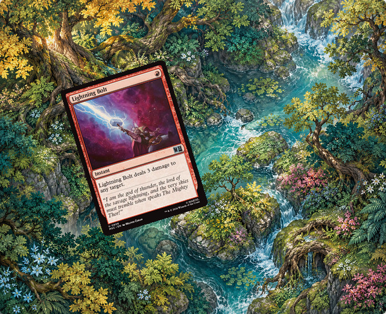
A smaller white-border Lightning Bolt near the bottom is recovered at a different position, angle, and size.
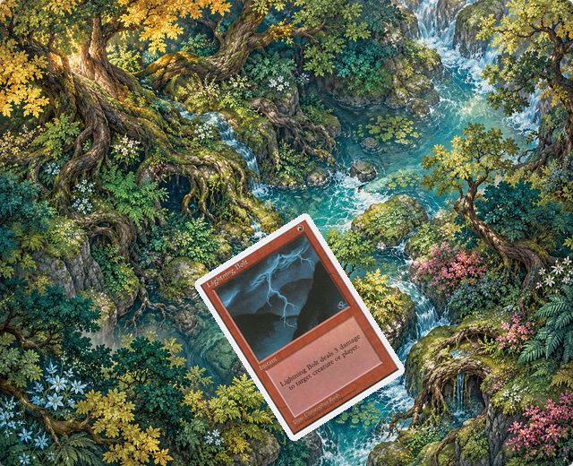
A smaller silver-border Booster Tutor at the upper right is extracted along its full physical edge.
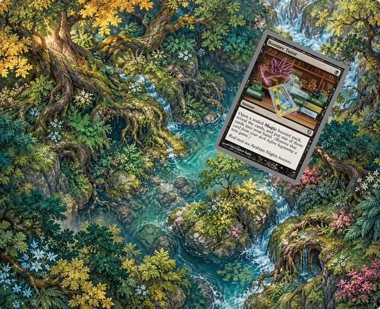
The same silver-border card is recovered lower down against a different part of the illustrated mat.
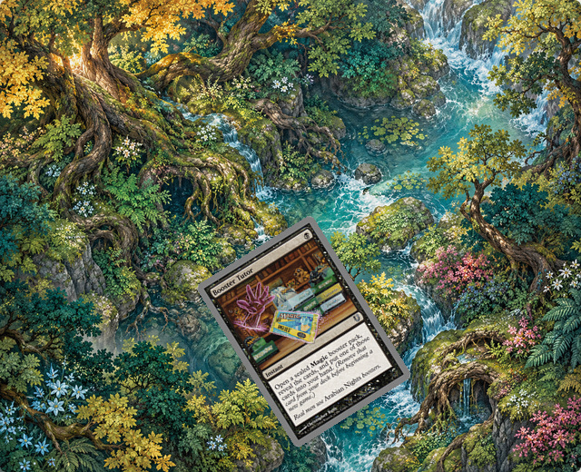
Returning an image does not guarantee a good extraction. These examples either miss cards or return the wrong outline.
The upper-right white-border card is recovered, but a small patch near the bottom-right background edge also produces a crop. One card is present; two crops are returned.
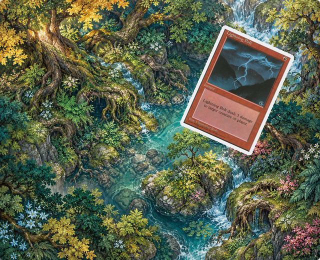
Neither card is found in this overlapping pair.
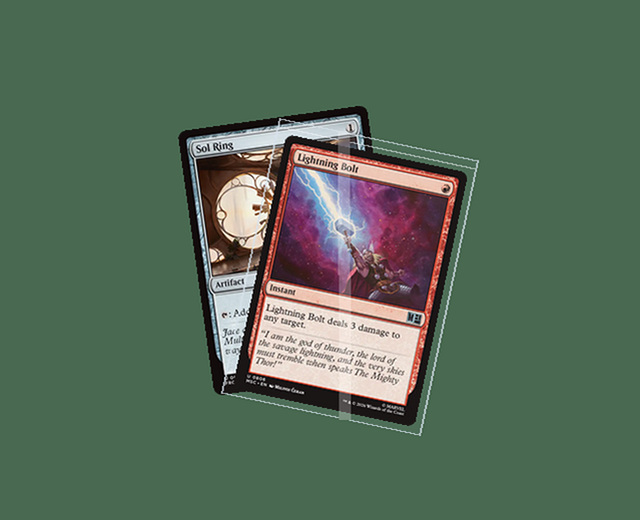
No crops returned.
Two crops are returned, but their outlines do not match the two full cards.
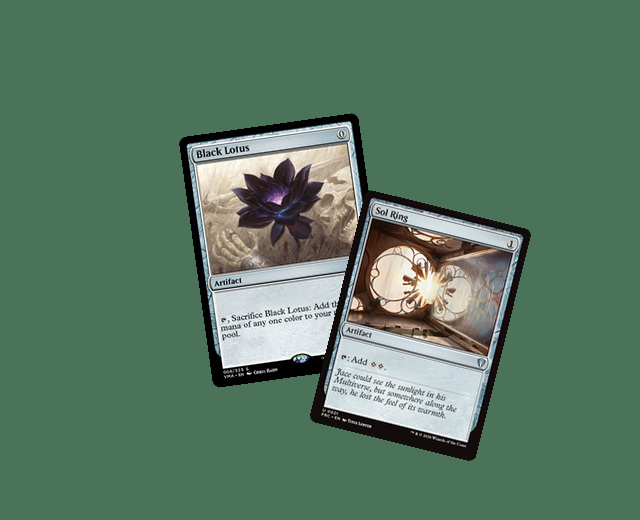
The card runs beyond the image edge; the returned crop has the wrong outline.
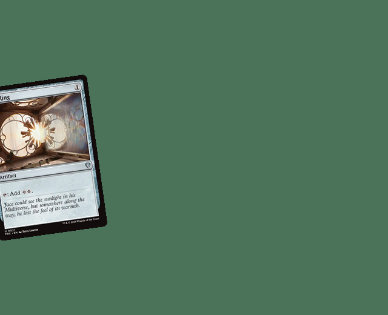
The outer sleeve boundary is mistaken for the card edge, leaving sleeve and background in the crop.
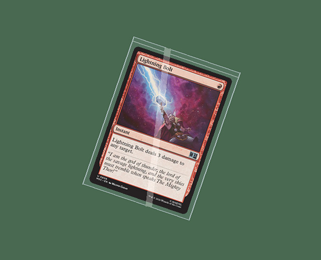
There are no cards in these inputs. Card-shaped objects can still produce crops.
An empty sleeve has no card, but its outline produces a crop.
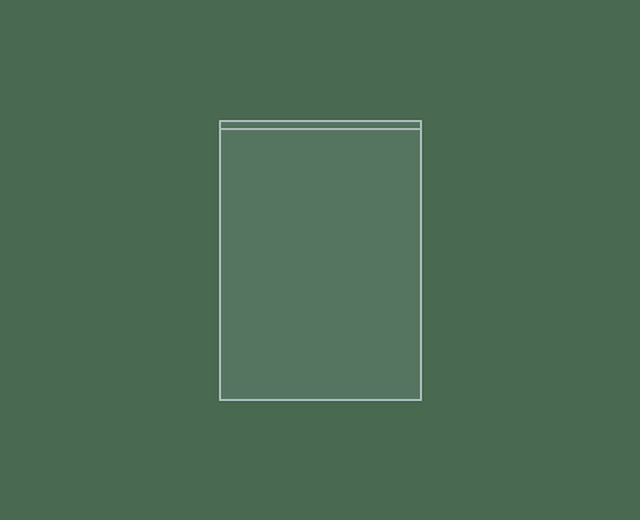
The empty mat's printed markings produce a crop even though no card is present.
These objects are correctly rejected. No crops are returned.
This tall phone is rejected because its outline has the wrong proportions.
The square paper is rejected by the trading-card proportion filter.
A match passes the saved scene's card count, corner position, and crop image checks. Returning the right number of crops is not enough: the outline can still be wrong. The tests allow up to 8 pixels of corner error and compare crop pixels against the saved reference.
All crops use the defaults: 250 × 350 pixels. Covered parts of a card remain covered in the crop. These selected examples show behaviour, not an accuracy benchmark; real-camera performance has not been measured.
Generated with the default extractor at e64553e. Inputs, checksums and evaluation results.
From a checkout of the repository:
cargo run --release --example extract -- photo.jpg crops/